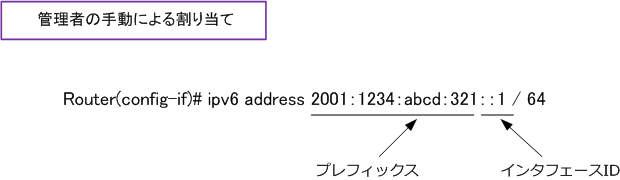
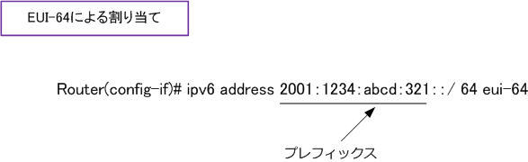
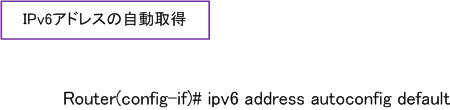

IPv6 addressing - Manual or EUI-64 or Autoconfig
IPv6ルータへのIPv6アドレスの割り当て
IPv6ルータのインタフェースにIPv6アドレスを割り当てる方法は以下の3パターンがあります。
| 対象機器 | 割り当て方法 | 割り当て対象 |
|---|---|---|
| IPv6ルータ | 管理者の手動による割り当て | プレフィックス ＋ インターフェースID |
| IPv6ルータ | EUI-64の生成による割り当て | プレフィックス ＋ インターフェースID （ 自動生成 ） |
| IPv6ルータ | autoconfigコマンドで自動取得 | プレフィックス ＋ インターフェースID + デフォルトルート |
IPv6アドレス - ?@ 管理者の手動による割り当て
管理者の手動の割り当てでは「プレフィックス」と「インターフェースID」の両方を手動で割り当てます。 例えば、Ciscoルータでは以下のように設定します。

IPv6アドレス - ?A EUI-64の生成による割り当て
EUI-64の生成による割り当てでは、「プレフィックス」を手動で割り当て、「インターフェースID」は EUI-64で自動で生成させます。例えばCiscoルータでは、以下のように最後にeui-64とつけて設定します。

IPv6アドレス - ?B IPv6アドレスの自動取得
IPv6ホストと同様、IPv6ルータのインターフェースでもIPv6アドレスを自動取得することは可能。ただし この設定は一般的なIPv6アドレスの割り当て手法ではなく、あまり使用されることはない方式となります。

ipv6 address autoconfig 後にdefaultと指定することで、RA情報に基づきルーティングテーブルにデフォルトルートも追加されます。